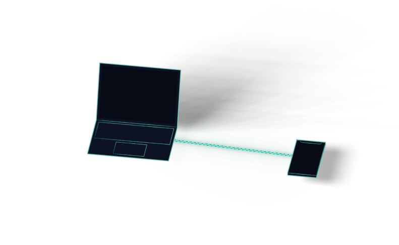
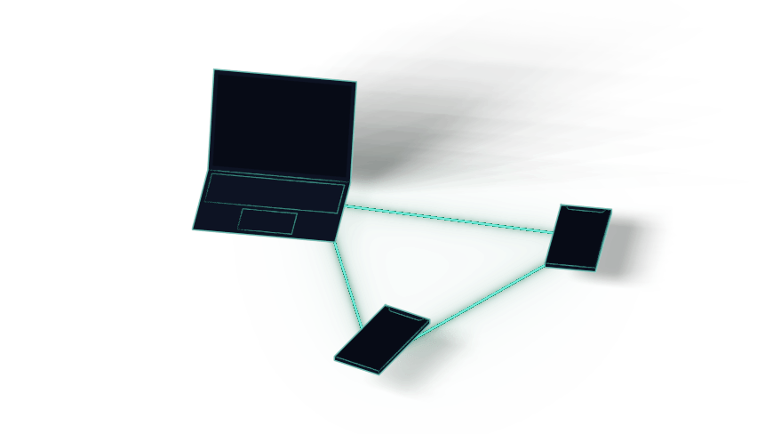
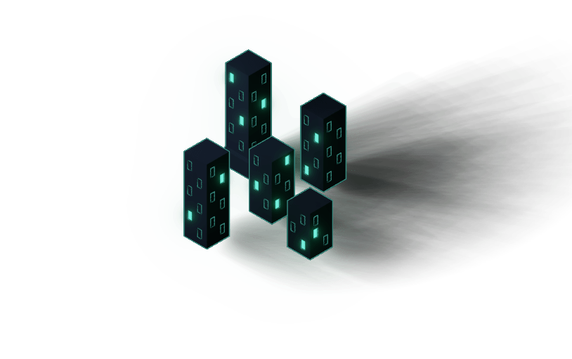

Fácil de utilizar
Share Control es una aplicación web, simplemente ábrala en su navegador, únase a una sala y comience a compartir. No es necesario descargar aplicaciones específicas para diferentes plataformas.

Multi-dispositivo
Tradicionalmente, compartir archivos en varios dispositivos ha sido una molestia. Con Share Control, puede compartir archivos en varios dispositivos con facilidad.

En cualquier sitio
Share Control se basa en tecnologías web modernas, lo que le permite funcionar en dispositivos muy alejados entre sí. Solo necesita estar conectado a Internet.
"Una forma rápida y sencilla de transferir archivos entre mi portátil, mi iPhone o mi iPad"